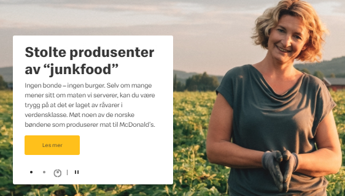

Universell utforming vurdering
Oppgave:
Vurder et valgfritt nettsted ved hjelp av DIFIs UU-kriterier.
- Innledning
- Lover og Regler: WCAG
- Valg av nettsted
- Krav og rettningslinjer
- Manuell sjekk
- Automatisk validator
- Konklusjon - Hvordan sikre reell uu på nettsteder?
- Kilder
Innholdsfortegnelse
uu Forkortelse:
uu =/= UU
I følge språkrådet er den formelle forkortelsen for universell utforming uu.
Forkortelsen UU med store bokstaver refererer til stoffet utarmet uran.
Innledning
Universell utforming
Universell utforming handler om at et produkt skal være utformet med en hovedløsning som er tilrettelagt slik at flest mulig skal kunne bruke det uten problemer.
Lover & Regler
Universell utforming er lovpålagt i Norges lover under likestilling og diskrimineringsloven kapittel 3, dette er også inkludert informasjons- og kommunikasjonsteknologi (IKT).
Kap. 3 §18: Særlig om universell utforming av IKT
Løsninger for IKT som underbygger virksomhetens alminnelige funksjoner,
og som er hovedløsninger rettet mot eller stilt til rådighet for allmennheten,
skal være universelt utformet fra det tidspunktet som er fastsatt i § 41.
Med IKT menes teknologi og systemer av teknologi som brukes til å uttrykke, skape, omdanne, utveksle,
lagre, mangfoldiggjøre og publisere informasjon,
eller som på annen måte gjør informasjon anvendbar.
(https://lovdata.no/lov/2017-06-16-51/§18)
WCAG
Digitaliseringsdirektoratet (Difi) håndhever reglene av uu innenfor IKT. De gjør dette ved å teste ut et nettsted opp mot «standard web content accessibility guidelines 2.0» altså WCAG 2.0. Og for at nettstedet skal bli godkjent, må det minimum oppfylle 35 av 61 suksesskriterier i standarden.
WCAG 2.0 består av 4 deler: (s. 34)
1. mulig å oppfatte
2. mulig å betjene
3. forståelig
4. robust
Nettsted
Vi har gjennomførte vurdering av nettsiden til McDonalds. Vurderingen var på nettsiden https://www.mcdonalds.com/no/nb-no.html (Dato: 17.10.20.)
Testingen har hovedfokus på startsiden, og omfatter ikke McDonalds sin app, eller gjennomføring av kjøp.
Vi kommer til å vurdere nettsiden ut fra rådene på Difi sine nettsider, og vil bruke en del verktøy for å hjelpe med å teste forskjellige aspekter av nettstedet.
Krav
Hva ser vi etter på nettstedet?
Det er mange ting å ta hensyn til når det gjelder universell utforming på et nettsted. Vi vil nå forklare litt rundt en del av aspektene man må huske på, og deretter se på McDonals nettsted, og sjekke hva som er bra, og om det er noen feil eller mangler hvor de burde gjort noe annerledes.
Bilde & Grafikk

Bilder og grafikk er en viktig del for mange brukere. Mange trenger supplerende materiale for å forstå informasjon gitt i tekst. Det er viktig med balanse, for hvis man bare har bilder og illustrasjoner risikerer man derimot å utestenge brukere.
For å få maksimal uu er det en generell anbefaling å benytte alle passende virkemidler for å nå frem med ett budskap. Bilder, illustrasjoner og multimedia er de mest effektfulle, men enkel, tydelig tekst og lydklipp kommer også høyt opp på listen.
Alternativ bildetekst
Innhold og/eller motiv i bilder og illustrasjoner må formidles korrekt til alle brukerne.
Hvis bildet har en lenke, er det viktig at lenkens mål er tydelig. Både motiv og lenkemål formidler man ved å bruke alternativ bildetekst (alt-tekst) i koden. Alt-tekst lar deg styre hva brukere som har slått av bildevisning eller ikke kan se bildene får presentert.
Man skal heller ikke ha bilde av tekst så langt som det er mulig. Dette kommer av at tekstkvaliteten blir dårlig ved forstørring, og hjelpemiddel for dyslektikere ikke kan dra nytte av teksten i bildet.
McDonalds sin nettside er enkelt og oversiktlg delt opp
Resultat:
Vi har prøvd å få opp alt tekst på nettsidens bilder, men får det bare til på noen få av dem. Det er noe usikkert om det er utelatt alt tekst, eller om det er noe vi gjør feil.
Farge & Kontrast
Det er viktig at alt innhold, og da særlig tekst, har en god lesbarhet slik at flest mulig kan lese det. Dette gjør man ved å ha tilstrekkelig kontrast mot bakgrunnen.

Kontrast måler vi ut fra lysstyrke, der maksimal kontrast er 21:1 for svart mot hvit. Liten tekst krever en høyere kontrast for å ha god lesbarhet. WCAG 2.0 stiller derfor ulike krav til kontrastverdi for stor og liten tekst. Dersom bakgrunn og tekst har varierende farge, eller er gradert, skal man måle mellom den svakeste kontrasten.
Kravet til kontrast mellom tekst og bakgrunn er:
- 4.5:1 for liten tekst
- 3.0:1 for stor eller fet tekst
Jeg har valgt å bruke «colour contrast analycer (cca)» for å sjekke at de ulike elementene på nettsiden overholder WCAG kravene.
Ved hjelp av cca kan jeg zoome inn på nettsiden og sammenligne kontrastverdier ved hjelp av et 'fargedråpe' verktøy.
Resultat:
Bakgrunnen på Mcdonalds sin hjemmeside er hvit, og mesteparten av teksten er svart, noe som gir en veldig god kontrast.
Det er derimot også litt bruk av gult og hvitt sammen, da det er hovedfargene til McDonalds.
Problemet med de fargene sammen derimot, er at kontrasten bare er på 1,7:1, langt under akseptable nivå.
Mcdonalds bruker også litt forskjellig tekst på et bilde med gult og hvitt, noe som burde vært unngått.
Eller så har McDonalds sin nettside en god kontrast på alle elementene deres med unntak av 'les mer' knappen på bildekarusellen der de ikke har (hvis jeg har tolket kravene riktig) tilstrekkelig kontrast.
Dette virker som en glipp fra deres side, da alle de andre knappene har gode kontrastverdier, men kunne enkelt vært oppdaget og fikset
Manuelt resultat: Hva er bra | Hva er dårlig
Jeg vil nå se rundt på nettsiden og manuelt prøve ut om elementene har et godt brukergrensesnitt.
Bildekarusell:

Øverst på siden er det en bildekarusell med tre nyheter som byttes mellom, og det er tyderlig lagt inn mye ekstra arbeid for at karusellen skal være så intuitiv og fungere for så mange som mulig.
Under nyheten er det en liten sirkler for hver av de tre sakene, og for å indikere hvilken sak som er den nåværende sirkelen, har den en mørkere farge. Rundt den aktive sirkelen vil en større sirkel sakte fylle seg ut for å indikere hvor lenge det er til den neste saken kommer.
Videre hvis man går over bildet med pekeren vil karusellen automatisk bli satt på pause, og når man fjerner pekeren vil karusellen starte igjen. Man kan også velge hvilke bilde man ønsker å se på ved å klikke på en av de tre sirkler nederst på bildet, og ved siden av sirklene er det en start/stopp knapp som man kan trykke på for å stoppe karusellen helt.
Alt dette hjelper brukere med å forstå og gir dem mulighet til å velge det som passer dem best.
Skjermleser
Bildekarusellen fungere også ypperlig i kombinasjon med en skjermleser. Man blir først fortalt at det er en karusell, og deretter lest opp saken, karusellen er også her automatisk satt på pause.
For knappen der det står «les mer» vil skjermleseren si «Kobling, les mer», og knappene er nummerert («slide 2 of 3»), og er satt som «aktiv» for den saken man er på.
Det eneste negative er at start/stopp knappen ikke har noen forklaring, og blir dermed lest opp som bare «knapp».
Header og foter delene av siden fungere også bra, og blir lest opp riktig av skjermleseren.
Når det gjelder resten av siden derimot, fungerte den dårlig når vi prøvde å navigere med skjermleseren.
- Nedover på nettsiden kan man se det står fem forskjellige saker:
- Om vår mat
- bestill på nett
- McDelivery
- Søk jobb
- feedback.
Skjermleseren derimot, leser verken opp noen alternativ tekst for bildene, eller skriften under bildene, så alt den leser opp er selve knappen som bare sier «se mer».
Nå har jeg aldri brukt en skjermlese før, så det er mulig at jeg gjorde det feil.
Derimot så hvis dette virkelig ikke fungerer, så er det et svært utestengende avvik, som det er veldig enkelt å teste og fikse, så et slik avvik er helt uakseptabelt for en nettside.
Validator resultat
Nå som vi har sett litt på McDonalds nettsted manuelt, skal vi bruker noen automatiske validatorere for å se litt dypere inn i koden.
Tingtun Page checker
På Checkers.eiii kan man sjekke et nettsteds tilgjengelighet utifra sidens kode.
Her viser testen at det, ifølge den, er 26 feil på siden.
Blant feilene er det blant annet;
- Likt id brukt flere steder.
- Tomme linker uten innhold, alt text eller tittel.
- Overskrifter uten innhold.
Optimalisering
Det er viktig å ha en rask nettside slik at folk med dårlig nettverk eller mobil også har lik mulighet til å bruke nettsiden.
GTMetrix
Vi sjekker da netthastighet med: gtmetrix.com
og derifra får vi tilbakemelding om hvor rask siden er og hva som drar hastigheten ned:
bilder er unødvendig store.
Mange av ikonene brukt på siden (sosiale medier, appstore, start stopp knapp) er unødvendig store, og bruker mange ressurser på å bli lastet inn. Her kunne bildene vært 80% mindre.
Google maps tar også opp mange unødvendige ressurser. Dette kunne vært halvparten så resurskrevende ved å bruke komprimering.
Det er også brukt mye javascript i løpet av innlastingen av siden. Dette er unødvendig og legger til en del ekstra arbeid for maskinen og sakker ned innlasting.
Her virker det også som om det er mye rom for forbedringer fra McDonalds.
Konklusjon - Hvordan sikre reell uu på nettsteder?
Som vi nå har sett er det mange ting som er vanskelig å manuelt sjekke på et nettsted, og en automatisk validator kan hjelpe mye med hvordan man kan forbedre brukergrensesnittet.
Det er derimot også viktig å også sjekke nettstedet selv, da det er mye en validator ikke kan sjekke for deg.
For eksempel så vil en validator kunne se om alle bilder har alt tekst, men man må selv gå inn og sjekke at alt teksten faktisk passer med bildet.
Så som konklusjon så det er vanskelig å sikre reell uu, men det er veldig mange gode gratis hjelpemiddler og råd på nettet som kan hjelpe langt på vei.
Spesielt Difi.no har en hjelpeside som heter; Løsningsforslag for web Hvor det er veldig mange gode råd og verktøy for å sikre universell utforming.
Kilder
- https://www.mcdonalds.com/no/nb-no.html
- https://uu.difi.no/
- https://uu.difi.no/krav-og-regelverk/losningsforslag-web
- https://lovdata.no/dokument/NL/lov/2017-06-16-51#KAPITTEL_3